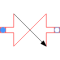

OneWayValveSimple one-way valve |

|
Information
This information is part of the Modelica Standard Library maintained by the Modelica Association.
Simple one-way valve, comparable to the electrical ideal diode model.
- from flowPort_a to flowPort_b: small pressure drop, linearly dependent on volumeFlow
- from flowPort_b to flowPort_a: small leakage flow, linearly dependent on pressure drop
Parameters (10)
| medium |
Value: Modelica.Thermal.FluidHeatFlow.Media.Medium() Type: Medium Description: Medium in the component |
|---|---|
| m |
Value: Type: Mass (kg) Description: Mass of medium |
| T0 |
Value: Type: Temperature (K) Description: Initial temperature of medium |
| T0fixed |
Value: false Type: Boolean Description: Initial temperature guess value or fixed |
| tapT |
Value: 1 Type: Real Description: Defines temperature of heatPort between inlet and outlet temperature |
| V_flowNominal |
Value: Type: VolumeFlowRate (m³/s) Description: Nominal volume flow rate (forward) |
| dpForward |
Value: 1e-6 Type: Pressure (Pa) Description: Pressure drop at nominal flow (forward) |
| dpNominal |
Value: Type: Pressure (Pa) Description: Nominal pressure (backward) |
| V_flowBackward |
Value: Type: VolumeFlowRate (m³/s) Description: Leakage volume flow rate (backward) |
| frictionLoss |
Value: Type: Real Description: Part of friction losses fed to medium |
Outputs (4)
| T |
Type: Temperature (K) Description: Outlet temperature of medium |
|---|---|
| T_a |
Type: Temperature (K) Description: Temperature at flowPort_a |
| T_b |
Type: Temperature (K) Description: Temperature at flowPort_b |
| dT |
Type: TemperatureDifference (K) Description: Temperature increase of coolant in flow direction |
Connectors (2)
| flowPort_a |
Type: FlowPort_a |
|
|---|---|---|
| flowPort_b |
Type: FlowPort_b |
Components (1)
| medium |
Type: Medium Description: Medium in the component |
|---|
Used in Examples (1)
|
Modelica.Thermal.FluidHeatFlow.Examples Water pumping station |